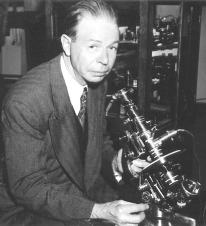
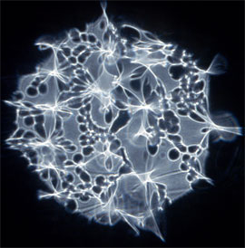
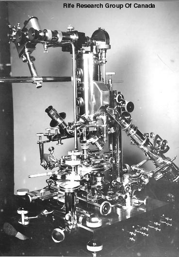
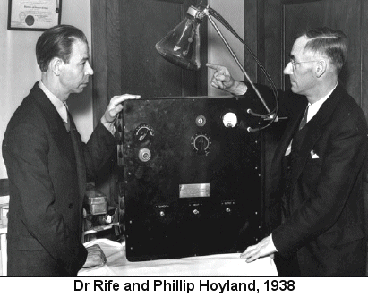

Royal Rife's Cure for Cancer
Is there a cure for cancer? If so, how could it be possible to suppress something like this? To begin, let’s take a look at the facts and see what truth comes up. This story’s greatest contribution comes from Dr. Royal Raymond Rife, a self-educated man in many fields. His diverse background knowledge is what allowed him to intuitively look for answers beyond the rigid tunnel vision that one develops when focusing on a singular area of study. When he was faced with a problem, he would simply invent a new technology to solve it instead of giving up. This type of ingenuity and dedication is what allowed this man to have such an incredible story. He is most notably famous for inventing two different devices: one being a microscope, which allowed him to view bacteria/viruses that no man has ever before been able to see and the other being the “Rife Machine,” which allowed him to cure any disease. (you will soon see why I say, any disease)
The microscope he invented while in Chicago working at Northwestern University Medical School was one of a kind. It was able to magnify at a maximum of 17,000 diameters and at a minimum of 5,000 diameters. The strongest microscope at this time (1920’s - 1930’s) would only be able to magnify at a maximum of 2,000-2,500 times, which didn’t allow Rife to view certain micro-organisms. Without being able to view and study certain micro-organisms, it was impossible to work on curing certain diseases. However, he was able to build such a powerful microscope due to a rearrangement of lenses and by introducing double quartz prisms and illuminating lights to be able to “tune in” and pick up on the different colors extremely small micro-organisms naturally release at certain frequencies. This process substituted “staining,” which is what a scientist will normally do to view a certain molecule by introducing a color dye. Since the micro-organisms Rife needed to study were too small to “stain,” he capitalized on a principal that every molecule oscillates at its own distinct frequency. He was able to tune his microscope into those frequencies by emitting a light and could depict certain micro-organisms from their color against a black and white background. He first was able to single out and view for the first time the micro-organisms that caused tuberculosis, cancer, polio, and eventually AIDS.



Rife later realized that specific electromagnetic frequencies would have a negative effect on specific bacterial forms. This is because everything on this planet vibrates at a certain frequency to form an electromagnetic bond with other molecules. Each bond between two different types of molecules is different like a signature. This is what allows an opera singer to hit a specific note and shatter a glass, but not break anything else around it. This means Rife would be able to send an electromagnetic frequency (a sound/radio/light wave essentially) at the specific resonate frequency of a bacterial and cause it to break down while not affecting any of the cells around it at all. In other words, a harmless procedure that could cure any disease has just been discovered.


At first, Rife experimented on animals and was able to prove his new “Rife Machine” would work. Then during the summer of 1934, Rife had his first chance to try this out on humans. At the Ellen Scripps home near the Scripps Institute Annex in La Jolla, California, under the supervision of Dr. Milbank Johnsons, M.D., treatment for 16 patients was set up under a Special Medical Research Committee of the University of Southern California. These 16 people were each diagnosed with terminal cancer along with some other diseases. At this point the 16 patients had already undergone conventional treatments and surgeries, and were at the point where modern science could do no more for them. Treatment from Rife however, consisted of a patient sitting underneath a light for 3 minutes at 3 day intervals until the cancer goes away. After 6 weeks-2 months, 14 of the 16 patients were declared clinically cured by a staff of five medical doctors and Dr. Alvin G. Foord, M.D., pathologist for the group. Rife wrote a book reporting what happened stating:
"With the frequency instrument treatment, no tissue is destroyed no pain is felt, no noise is audible, and no sensation is noticed. A tube lights up and 4 minutes later the treatment is completed. The virus or bacteria is destroyed and the body then recovers itself naturally from the toxic effect of the virus or bacteria. Several diseases may be treated simultaneously."
He also noted that there were no rises in body temperature during or after treatment. Also, there were no special diets administered during the time the patients were treated. However, a proper healthy diet would without a doubt help anyone. (more on proper eating here: secrets of food) Other members involved in the clinic were:
- Whalen Morrison, Chief Surgeon of the Santa Fe Railway
- George C. Dock, M.D., internationally famous
- George C. Fischer, M.D., Children's Hospital in New York
- Arthur I. Kendall, Dr. Zite, M.D., Professor of Pathology at Chicago University
- Rufus B. Von Klein Schmidt, President of the University of Southern California
- Dr. Couche and Dr. Carl Meyer, Ph.D., head of the Department of Bacteriological Research at the Hooper Foundation in San Francisco, were also present
- Dr. Kopps of the Metabolic Clinic in La Jolla signed all fourteen reports and knew of all the tests from his personal observation’
One report was of a man receiving treatment that was so thin due to the cancer that “his backbone and his belly were just about touching each other.” After receiving treatment during those 6 weeks- 2 months, he completely recovered and was gaining all his weight back. Also, an additional 6 weeks after the first 14 patients were cured; the remaining 2 patients were then cured, yielding a 100% cure rate. To read more please click here.
Wisdom-Square › Alternative Medicine › Royal Rife's Cure for Cancer